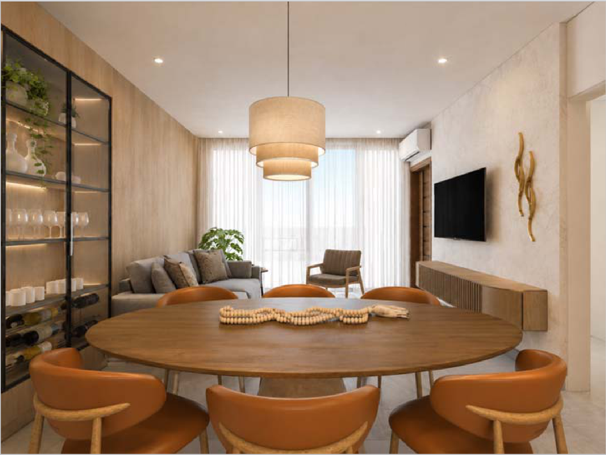
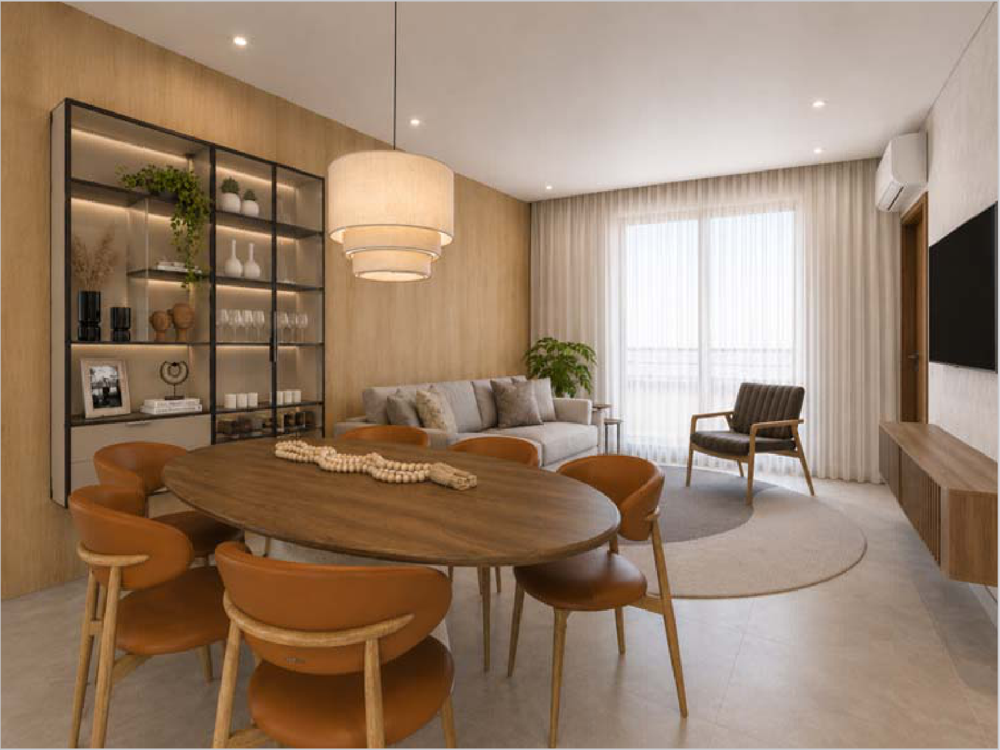
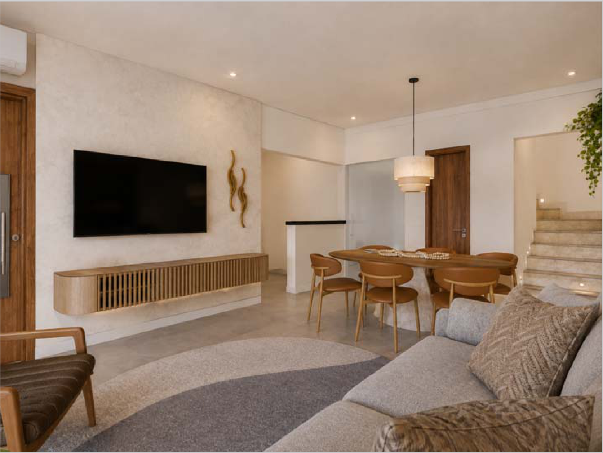

O levantamento foi feito sobre as oito pranchas do caderno — planta, elevações externas e internas, cortes e o detalhe da báscula. Cada móvel com o seu valor: dois na parede do jantar, dois na da TV. O que está descrito abaixo é o que será executado.


| Conjunto | À vista | 6 × sem juros |
|---|---|---|
| Cristaleira | R$ 10.900 | R$ 11.990 |
| Painel do jantar | R$ 8.100 | R$ 8.910 |
| Rack da TV | R$ 7.900 | R$ 8.690 |
| Painel da TV | R$ 3.600 | R$ 3.960 |
| Total | R$ 30.500 | R$ 33.550 |
Fornecimento de material, produção em CNC e coladeira automática próprias, portas em vidro reflecta bronze, iluminação em LED com perfil, ferragem, perfil de alumínio, adega, transporte, entrega na obra e instalação e montagem por equipe própria da Valvic.